First knowledge of Peru—Expeditions of Pizarro—Geography of Peru—But a small part of it inhabitable—The tribes of ancient Peru—How classified—Sources of our knowledge of Peru—Garcillasso De La Vega—Origin of Peruvian civilization—The Bolson of Cuzco—Historical outline—Their culture—Divided into phratries and gentes—Government—Efforts to unite the various tribes—Their system of colonies—The roads of the Incas—The ruins of Chimu—The arts of the Chimu people—The manufacture of pottery—Excavation at Ancon—Ruins in the Huatica Valley—The construction of a Huaca—The ruins at Pachacamac—The valley of the Canete—The Chincha Islands—Tiahuanuco—Carved gateway—The Island of Titicaca—Chulpas—Ruins at Cannar—Aboriginal Cuzco—Temple of the Sun—The Fortress—General remarks.
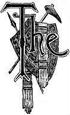EARLY part of the sixteenth century was surely a stirring time in the world's history. The night of the Dark Ages was passing off of the Old World; the darker gloom of prehistoric times was lifting from off the New. Spanish discoveries followed each other in rapid succession in the South. As yet, they supposed these discoveries to be along the eastern shores of Asia, but, in 1513, Balboa, from a mountain peak, in Darien, saw the gleam of the great Pacific, which intervenes between America and Asia. At the same time he was informed there was a country to the southward where gold was in common use, and of as little value among the people as iron among the Spaniards. As gold was what the Spaniards most desired, we can imagine how they rejoiced over such information.
The rich country of which Balboa was thus informed was later known as Peru. Balboa himself did not attempt its discovery. There was no lack, however, of those who wished to achieve fame and fortune by so doing. Among other restless spirits who had been attracted to the New World, was Francisco Pizarro. He had been associated with Balboa in founding the settlement of Darien, and, of course, he was among the first to hear of the marvelous country farther south. In 1518, Panama, on the Pacific coast, was made the seat of government for the Spaniards in that section of the country. Pizarro was one of the first there—his services had been rewarded by the grant of an estate. The historian of his expedition speaks of him as "one of the principal men of the land, possessing his house, his farm, and his Indians."1 We need not doubt but what he often pondered over his knowledge of the rich country south. He was well acquainted with Indian character, and knew that a small band of resolute Europeans, possessed of fire-arms, could sweep every thing before them.
He could not endure the quiet life on his estate, and so he obtained from the governor permission to explore the coast of the South Sea to the eastward. He spent a large part of his fortune on a good ship and the necessary supplies for the voyage, and finally set sail from Panama in November of 1524. It needed a man of no common spirits to withstand the disappointments of the next few years. In less than a year this ship returned to Panama for reinforcements. Pizarro himself and a few of his men remained at a place not very far from Panama. Here he was joined by reinforcements under Almagro. Undismayed by his first experience, he again sailed southward along the coast. Xeres's brief account is as follows: "When they thought they saw signs of habitations, they went on shore in their canoes they had with them, rowed by sixty men, and so they sought for provisions. They continued to sail in this way for three years, suffering great hardships from hunger and cold. The greater part of the crew died of hunger, insomuch that there were not fifty surviving. During all these years they discovered no good land; all was swamp and inundated land without inhabitants."
This expedition accomplished nothing further than to obtain definite information as to Peru. Pizarro's grant from the governor having expired, and the further fact that he had spent all his fortune in these unsuccessful expeditions, made it necessary for him to go to Spain. Received by the emperor with favor, clothed with ample authority, he was able to raise men and money, and finally sailed from Panama in 1531 on his third and successful expedition for the conquest of Peru. Thus was made known to the world what is regarded as the most wonderful example of native civilization in the two Americas.
The dawn of history for Peru was the sunset of her native culture. In a few short years what has come down to us as the Empire of the Incas was completely overthrown; the enslaved Indians were groaning under the weight of Spanish oppression; the demolition of her ancient monuments had already begun, and romance, tradition, and wonder had already thrown their subtle charms around the ruins. The old customs and usages were on the sudden dropped, a new culture was forced upon the unwilling natives, and prehistoric Peru, though distant but a few years in time, was as completely separated from historic Peru as is the culture of the Neolithic Age in Europe from that of the early historic period.
The magician's wand in the fairy stories of olden days did not present results more bewildering in their changes than did the operations of the Spaniards in Peru. All accounts unite in praising the government of ancient Peru. There is probably no question but what the government the Spaniards overthrew was one far better adapted to the wants of the native inhabitants than the one they forced them to accept. But when we read the accounts of that government as set forth by the early writers, we are at a loss to know what to believe. There is such an evident mixture of fables, traditions, and facts, that the cautious student hesitates, and asks what support the researches of later scholars give to these early writers. We doubt whether we have to this day clear ideas of the culture of ancient Peru. This is to be regretted. There is no question but that here was the highest development of the Indian race in America. If we accept the accounts given us, here rose an empire which will not suffer by comparison with the flourishing empires of early times in Oriental lands. Let us try and learn what we can of this culture, and see wherein it differed from that of the civilized tribes already discussed.
We must, first of all, acquaint ourselves with the physical features of the country. We can never fairly judge of the civilization or culture of a people until we know their surroundings. One of the discoveries of late years is, that the culture of a people is greatly influenced by their surroundings. The very appearance of a country whether it is mountainous or plain, sea-girt or inland, influences the character of a people. Civilization is found to depend upon such common factors as climate, food, and physical surroundings.2 Now if we will examine the map of South America, we will see that the entire section of country occupied by the tribes under consideration is very mountainous. What is known as the Andes is in reality the most eastern of the two ranges. The western one nearer the coast is called the Cordillera, or the Coast Range. The summit of this mountain range often spreads out into great undulating plains, the general elevation of which is from fourteen to eighteen thousand feet above the sea. This series of elevated plains forms a dreary, uninhabited stretch of country, "frigid, barren, and desolate, where life is only represented by the hardy vicuna and the condor."3
This is the uninhabited portion of Peru. The general width of this plateau region is about one hundred and fifty miles. Passing this dreary stretch of country we come to another still elevated plateau section, which extends to the snow-clad Andes proper. The distance between these two great mountain ranges is from one to two hundred miles, but as we see on the map they come together in places. One such place, the Pass of La Raya, fifteen degrees south latitude is of importance as marking the northern extremity of the great basin of Lake Titicaca. This basin is remarkable in many respects. It is of no inconsiderable size, being six hundred miles in length by one hundred and fifty in width. It has a lake and river system of its own. At the northern extremity of the basin is the noted Lake Titicaca, which is given by some as the traditional place of origin of the Incas. This lake finds an outlet in the River Desaguadero, which flows in a broad and swift stream in a southerly direction, where it empties into Lake Aullagas.
Of this lake we know next to nothing, but it seems to be established that it has no outlet to the sea. Thus this Titicaca basin is but another example of interior basins like that of our own great Salt Lake. It is not, however, favorably situated for agricultural purposes. It is a "region where barley will not ripen except under very favorable circumstances and where maize in its most diminutive size has its most precarious development; where the potato, shrunk to its smallest proportions, is bitter; where the only grain is the quinoa, and where the only indigenous animals fit for food are the biscacha, the llama and the vicuna."4
Thus we see that a large part of the interior of Peru was not desirable for habitations. But this great plateau region north of the basin of Lake Titicaca is here and there broken up by what we would call valleys, but which the Spaniards more appropriately named bolsons, literally meaning "pockets." These bolsons are of various altitudes, and, therefore have different climates and productions. Some are well drained and fertile, others are marshy and contain considerable lakes. As a general thing, the bolsons are separated from each other by stretches of the dreary, desolate plateau; or by ranges of precipitous hills and mountains, or by profound gorges, along which courses some river on its way to swell the flood of the mighty Amazon.
The coast range of mountains of which we have spoken runs nearly parallel to the coast, distant from it about forty miles. This stretch of country along the entire coast of ancient Peru is mainly a desert. Owing to causes which we need not explain, rain is almost unknown; the consequence is, the coast presents a dreary, verdureless, forbidding appearance. The melting snows on the great Cordillera, however, send down, here and there, on their western flanks, feeble rivers. Some of these rivers reach the sea, others prolong their flow but a few miles from the mountains before the thirsty desert swallows them from view. As is true of all desert countries, all that is needed to render it fertile is water; so, wherever these rivers occur there are found wonderfully fertile valleys. Every one of these valleys was once thickly settled, but, like the bolsons of the interior, they were not connected with each other. Each valley is separated from its neighbor by many miles of almost trackless desert, across which the Incas are said to have indicated the road by means of stakes driven into the sand and joined by Ozier ropes. No remains of such roads have been found by modern travelers.
From this description it is "clear that but a small portion of the country was inhabitable, or capable of supporting a considerable number of people. The rich and productive valleys and bolsons are hardly move than specks on the map."5 It is necessary that we bear this description of the country in mind. It will help us to understand as nothing else will how the tribes located in one rich and productive bolson could, by successive forays, reduce to a condition of tribute tribes living in other detached valleys and bolsons. It will also enable us to put a correct estimate on the extravagant accounts that have reached us of the population of this country under the rule of its ancient inhabitants. We can also readily see why the tribes living in the hot and fertile valleys along the coast, which were called Yuncas by the Peruvians, should differ in religion and mental and moral characteristics from the tribes living in the bolsons of the interior, where the snow-clad peaks were nearly always in sight, and where the sun, shedding his warm and vivifying beams, would appear to the shivering natives as the beneficent deity from whence comes all good.
We must now turn our attention to the tribes inhabiting the section of country just described. We have seen that the Mayas, of Central America, the Nahuas, of Mexico, and the sedentary tribes, of the United States, were considerably in advance of the great body of the Indian tribes of North America. We find the same fact true of the natives of South America. Those tribes inhabiting the territory of ancient Peru, and those of the territory now known as the United States of Columbia, were considerably further advanced than the wild tribes living in the remaining portions of South America. Quite a number of our scholars have grouped in one class these partially civilized tribes of both North and South America, and called them the Toltecan Family.6 But others do not think that there are sufficient grounds for such a class division. They can not detect any radical changes in the domestic institutions of the various tribes.7 On this point we must wait until our authorities are agreed among themselves.
Attempts have been made to classify the various partially civilized tribes of Peru. There are several difficulties in the way. It was, for instance, the custom of the Incas, whenever they had reduced a tribe to tribute, to force them to learn their language, which was the Quichua, and is what the early Spanish writers call the general language of Peru.8 How far this language was forced on the tribes, and how far it was their own idiom, we can not tell. Mr. Markham, who has made a very careful study of all the authorities bearing on Peru, divides the territory of ancient Peru into five divisions, and in each locates a number of tribes, which he thinks forms a family.
The first, and most northern one, extends north from near Tumbez, in the present State of Ecuador. The second extends from Loja, on the north, to Cerro De Pasco, in about eleven degrees south latitude. The third, and most important, extends from this last named place to the pass of La Raya, fifteen degrees south latitude. This was the home of the Incas and five other closely related tribes. To the south of La Raya is the basin of Lake Titicaca, the home of a family of Indians generally known as the Aymara Indians. This name is, however, wrong; these tribes should be called the Collao Indians. These four divisions do not include any territory west of the Cordillera range, except one part of the third division. These four families are all closely related. Mr. Markham thinks they all had a common origin. Mr. Squier thinks the Collao, or, as they are generally called, the Aymara Indians, are distinct from the others. "They differ from each other as widely as the German's differ from the French," is his own conclusion. The entire coast district of Peru was the home of many tribes of Indians, about which we as yet know but little. The name by which they are known is Yuncas.9
We are now ready to proceed to a consideration of the culture of ancient Peru, and a description of the monuments. But before doing so we must have a word to say as to the authorities. At the time of the Spanish conquest of Peru, the Empire of the Incas was supposed to have been in existence about four hundred years. But the Incas had no hieroglyphic or pictorial system of recording events. The most they had was a system of knot records or quippos, which will be explained in due time. These records were simply aids to the memory. Mr. Squier places them "about on a par with Robinson Crusoe's Notched Calendar, or the chalked tally of an illiterate tapster."10 They are manifestly of no value as historical records.
It must be evident, then, that all our knowledge of Peru, previous to the arrival of the Spaniards, rests solely upon traditions. We have no reason to suppose that these traditions are of more value in their case than in the case of other rude and illiterate people. The memory of such people is very short lived. The tribes in the southern part of the United States must have been greatly impressed with Do Soto's expedition. They heard fire-arms for the first time, and for the first time saw horses ridden by men. Yet in the course of a few generations they had completely forgotten all this.11
One very eminent authority is Garcillasso De La Vega.12 Let us examine his writings a minute. He was born in Cuzco about 1540, but a few years after the conquest. His mother claimed descent from the royal family. He left Peru in 1560, when he was just twenty years old, and went to Spain. He first sought advancement in the army. Despairing of success in that line, he turned his attention to literature. One of his first works was an account of De Soto's expedition to Florida. The historian Bancroft thus characterizes this work: "An extravagant romance, yet founded upon facts—a history not without its value, but which must be consulted with extreme caution." Yet in this work there were no subtile ties of blood, no natural bias as there would be in favor of the land of his birth.
About 1600 he commenced his "Royal Commentaries of Peru." This is the main source of information as to ancient Peru. We must reflect that he had been away from his native land forty years when he commenced the work. His sources of information were the stories told him in his boyhood days, the writings of the Spanish travelers, monks, and conquerors, and what he learned by corresponding with his old friends in Peru, which he did when he formed the design of writing his history. In other words, his history rests on the traditions extant at the time of the conquest, viewed, however, from a distance of sixty years. Who can doubt but what the old man, writing his accounts of this mother's race, that race that had been so deeply wronged, wrote it under the influence of that potent spell, which the memory of old age throws around childhood's days?
It is evident we have in these accounts but little deserving the name of history. When he undertakes to tell us of the doings of the Incas, who are supposed to have reigned three or four hundred years before the Spanish conquest, descending to such details as what nations they subdued, the size of their armies, their speeches to their soldiers, the words of counsel they addressed to their heirs, their wise laws and maxims—and we know that this account rests on traditions—he who believes that they are of historical value, is surely possessed of a good store of credulity. We do not mean to say that his writings are of no account. On the other hand, they are of value. The historical part we are to consider simply as traditions, and we are to weigh them just as we would any other collection of traditions and compare them with monuments still extant. He is good authority on the customs and manners of the Peruvians just previous to the arrival of the Europeans.
We have seen what strange mistakes the Spanish writers made in describing the government and customs of the Mexicans. We have no doubt but what substantially the same mistake has been made in regard to Peru. We believe that a careful, critical study of all that has been written on the subject of Peru by the early writers will establish this fact. As yet this has not been done. We must therefore be careful in our description of the state of society amongst them, as we do not wish to make statements not supported by good authority.
We must try and decide as to what is the most probable origin of the ancient Peruvian civilization. Some of the earlier writers on this subject would trace it to an influx of Toltecs, the same mythical race that is credited with being the originators of the culture found in Mexico and Central America. But our modern scholars have clearly shown that the Toltec Empire, which was supposed to have preceded the Mexican, never existed. What we are to understand by the Toltecs is the sedentary tribes of Indians, either of the Nahua or Maya stock. The only value we would assign to the story of their dispersion is that it is a traditional statement that the migration of the sedentary Indians has been in a direction from north to south.
We have no means of knowing when the first tribes arrived in the country, or of their state of culture. It was doubtless at a very early date, and the tribes were probably not far advanced. We have no reason to suppose the culture of Peru was influenced from outside sources at all. We can not detect any evidence of a succession of races in Peru. The distinguished author to whom we have already referred13 speaks of what he calls the ancient Peruvians as distinguished from the modern tribes that acknowledged the government of the Incas.14 We think that all the evidence points to a long continued residence of the same race of people.
We may suppose that in the fertile valleys of the coast, and in the bolsons of the interior, tribes of rude people were slowly moving along the line of progress that conducts at last to civilization. There is no reason to suppose that this progress was a rapid one. Under all circumstances this development is slow. We must not forget the natural features of the country. The inhabited tracts were isolated, hence would arise numerous petty tribes, having no common aims or mutual interests. Each would pursue their own way, and would keep about equal pace through the stages of Barbarism.15
In process of time geographical and climatic causes would produce those effects, from which there is no escape, and some tribes would distinguish themselves as being possessed of superior energy, and the same results would follow there as elsewhere; that is, the dominion of the strong over the weak. All other circumstances being equal, we would look for this result in a section where a mild climate and fertile soil enabled man to put forth his energies, and rewarded his labors. All accounts agree in speaking of the bolson of Cuzco as well provided by nature in this respect. One eminent traveler speaks of it as "a region blessed with almost every variety of climate. On its bracing uplands were flocks of llamas and abundance of edible roots, while its sunny valleys yielded large crops of corn, pepper, and fruits."16 Mr. Squier thinks that, on the whole, the climate is very nearly the same as that of the south of France.17
This bolson was the home of the Incas. A number of writers speak of the Incas very much as if they were a royal family. It is not necessary to discuss this point very extensively at present. All our accounts of their early history are traditional. Mr. Markham and Mr. Squier, both competent judges, assert that the weight of traditions is to the effect that the Incas originated near Cuzco. "Universal traditions," says Mr. Markham, "points to a place called Peccari Tampu as the cradle or point of origin of the Incas." As near as we can make out from the description, this was where, as seen from Cuzco, the sun appeared to rise.18
We must remark that the sun was the ancestral deity of the Incas. All the Andean people worshiped some object as an ancestral deity. "An Indian," says La Vega, "is not looked upon as honorable unless he is descended from a fountain, river, or lake, or even the sea, or from a wild animal, such as a bear, lion, tiger, eagle, or the bird they called a condor, or from a mountain, cave, or forest." The Incas claimed descent from the sun. So we can see why their legends would center on the place where the sun appeared to rise. In after years, when they had extended their conquests to the Collao,19 and stood on the shore of Lake Titicaca, the sun appeared to them to rise out of its waves; and so this lake became to them a second point of traditional origin.
We see we can not solve the question of the origin of the Incas until we solve the deeper problems of the origin of the Andean tribes. Every thing seems to indicate a long-continued residence, perhaps for centuries, and a slow advance in culture. We are not to suppose the Incas were endowed with unusual capacity for improvement; all the tribes were probably about equal in this respect.20 But their situation was in their favor, and they did not have to contend with those obstacles that confronted other tribes. They must have increased in numbers and in culture; they would in time feel themselves strong enough for conquest. We must bear in mind the peculiar geographical features of the country. In the isolated valleys and bolsons were living other tribes, but little inferior to the Incas. There were no common interests between these tribes. One by one they fell before the assaults of the Incas, and were reduced to tribute. Rendered still more powerful by success, the Incas pushed on their conquests until finally all the tribes living in that vast stretch of country from the Andes to the Pacific, from Chili to the United States of Colombia, acknowledged themselves tributary to the Incas. This was the state of things when the Spaniards, under Pizarro, appeared on the scene.
When we undertake to learn the history or the state of culture among the Incas, we are entering on a difficult subject. Of their history, we know but very little more than is given in this outline; and owing to the complete absence of all records, we can not expect to know very much. Garcillasso draws such an inviting picture of the happy government of the Incas, that we would suppose that no rebellion or insurrection would ever occur. It seems, however, that their government was as much subject to such trials as any. Mr. Forbes tells us that "the Aymaras never submitted tamely to their Peruvian masters, but from time to time gave them much trouble by attempting to recover their independence." And M. Reville tells us of the Incas that, "more than once they had to suppress terrible insurrections." And we shall see, further on, that the probabilities are that the various tribes composing this so-called empire were not more compact and united than were the tribes composing the Mexican Empire.
Shortly before the conquest, the Incas had reached their zenith of power. Huayna Capac, who died about 1525, was in reality the last of the Inca chiefs. Under his management the tribes as far north as Quito were reduced to tribute. The story goes that shortly before his death he divided the empire between two of his sons. One, Huascar, the rightful heir to the throne; the other, Atahualpa, half-brother to Huascar. His mother was daughter of the last king (?) of Quito. Her father had been forced to submit to the victorious Huayna Capac. This division of the Incarial Empire, was not at all to the liking of either Huascar or Atahualpa. They both wished to be sole Inca. Civil war was the result. Atahualpa, by treachery, had taken his brother prisoner, and would doubtless have achieved his ambition, but just then Pizarro invaded the country, and the reign of the Incas was over.
Thus far, the story. We very much doubt whether this expresses the facts of the case. There is no question, of course, that civil war was in progress when the Spaniards arrived, which war, by the way, was a very fortunate thing for the Spaniards; but we do not know enough about the government of the Incas to know whether Huayna Capac could bequeath any powers to his sons. About all we are justified in saying is, that on his death, two persons (they were very likely brothers, and sons of Huayna Capac) aspired to the chieftaincy of the Incas, and, failing to agree, resorted to war to settle the matter.
The question is, how far back in the unrecorded past can we follow tradition? Huayna Capac is thought to have been chief for about fifty years. His predecessor is said to have been one Tupac Yupanqui. Velasco, an early writer on the Peruvians, thinks he was chief for about thirty-six years. As this would carry us back nearly one hundred years, it must be evident we have gone about as far as we can place any reliance on tradition. However, the third chief, going backwards, was also called Yupanqui, sometimes denominated "Yupanqui the Great," and his reign (?) takes us back to about the year 1400. "Beyond this point," says M. Castaing, "we fall into a mythological era." We fully agree with him. We can not think there is any special value in accounts of events said to happen before that time—that is, for historical purposes.
That there were victorious chiefs, conducting victorious forays before that date, is, of course, admitted. That the names of many of the chiefs have come down to us, as well as some of their notable achievements is quite possible. It is also evident that some mythological personages would appear in tradition as "reigning Incas." It is equally plain that neither Garcillasso, nor any of the Spanish writers, had any clear ideas of these ancient times or events. All traditions finally settle on Manco Capac as the first chief of the Incas. M. Castaing says he "is but an allegory of the period of formation."21 The date of the accession of this mythological chief is given by most authorities as about the year 1000. M. Castaing thinks it was in the middle of the twelfth century. It does not make much difference which date the reader concludes to accept—one will do as well as the other.22
Let us turn our attention to the culture of the Incas, and their state of government. Here we would expect to be on firm ground. We would expect the Spanish writers to give us reliable accounts of the state of society of the people they conquered. But, as Mr. Squier remarks, the overthrow of the Peruvian government "was so sudden and complete that the chroniclers had hardly time to set down the events which took place before their own eyes, and had little leisure, or perhaps inclination, to make a careful investigation into the principles of their civil and religious polity. As a consequence, this work has devolved upon the laborious student and archæologist of a later time." In other words, we are to compare the accounts given us by the early writers with our present knowledge of Indian society.
We have already made the statement that the Inca were a tribe of Indians. But, if they were a tribe, did they have the usual subdivisions of a tribe—which, we remember, are the phratry and gens? The Spanish writers say nothing about such divisions. This is not strange. They said nothing about the phratries and gentes of the Mexicans; and yet they were in existence. Neither did the English mention the institution of the phratries and gentes among the Iroquois; and yet they were fully developed. We answer, that the Inca tribe were divided into both phratries and gentes. It is necessary to show what grounds we have for such belief. It is well to have a little better understanding of the surroundings of this tribe.
The isolated section of country which they occupied is about seventy miles long by sixty in width. "The proper name for the aboriginal people of this tract," says Mr. Markham, "is Incas." This word must have been at first the title for chief—for all the chiefs in this section were called Incas; but, in process of time, the name was assumed as the special title of the tribe at Cuzco. Mr. Markham gives us further the names of seventeen lineages who occupied this valley. Whether a lineage was a tribe or not we can not decide. We will now confine our attention to the ruling tribe at Cuzco.
The Spaniards noticed that Cuzco was divided into two parts, called respectively Upper and Lower Cuzco. Garcillasso tells us that this division was made as follows. Manco-Capac with his wife and queen were children of the Sun, sent to civilize the Indians, who, before their arrival, were a very degraded sort of savages. From Cuzco this sun-descended couple went their different ways—the king to the north, the queen to the south—"speaking to all the people they met in the wilderness, and telling them how their father, the Sun, had sent them from heaven to be the rulers and benefactors of the inhabitants of all that land; . . . and, in pursuance of these commands, they had come to bring them out of the forests and deserts to live in villages." This sounded so good to the wild tribes, that they "assembled in great numbers, both men and women," and set out to follow their exhorters.23
The tribe that followed the king settled Upper Cuzco; while the queen's converts settled Lower Cuzco. This division was not made so that those living in one half should have any special privileges over the other—for they were all to be equal, like brothers. The division was solely in order "that they might be a perpetual memory of the fact that the inhabitants of one were assembled by the king, and the other by the queen." The only difference between them was, "that the people of Upper Cuzco should be looked upon and represented as elder brothers, and those of Lower Cuzco as younger brothers."
Such is the account of the settlement of Upper and Lower Cuzco. Any one acquainted with the general principles on which the division of Indian tribes into phratries took place, can not help concluding that these divisions were simply two phratries. The inhabitants of each traced their descent back to a supernatural personage. They were equal in power to each other as elder and younger brothers. Polo Ondegardo simply remarks that "the lineage of the Incas was divided into two branches, the one called Upper Cuzco, the other Lower Cuzco."24 There ought to be no objection to substituting for the word branches used above the scientific term our scholars now employ; that is, phratry. Each tribe of the Iroquois confederacy was divided into two phratries, and their name for this division was a word which meant brotherhood.25
Whatever doubt we may have on this point vanished when we come to examine into the customs of the Incas. We must not forget that the most prominent way a phratry shows itself is in matters of religion, and in the play of social games. "The phratry, among the Iroquois," says Mr. Morgan, "was partly for social and partly for religious objects. . . . In the ball game, for example, they play by phratries, one against the other. Each phratry puts forward its best players, usually from six to ten on a side, and the members of each phratry assemble together, but on opposite sides of the field in which the game is played. The members of each phratry watch the game with eagerness, and cheer their respective players at every successful turn of the game."
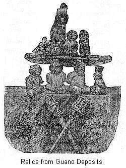Let us see how it was among the Incas.26 Like all Indian tribes, the Incas were very fond of ceremonious feasts. Nearly every month they celebrated one or more. We gather from Molina that on occasions when the whole tribe participated in such religious observances, the people of Upper Cuzco sat apart front Lower Cuzco. In the month corresponding to August they had a celebrated feast, the object of which was to drive out all evil from the land. We read: "All the people of Cuzco came out, . . . richly dressed, sat down on benches, each man according to the rank he held, those of the Upper Cuzco being on one side, and those of Lower Cuzco on the other." And of another feast we read: "They brought out the embalmed (?) bodies of the dead Incas, placing those who had belonged to Upper Cuzco on the side where that lineage was stationed, and the same with those of Lower Cuzco." Other examples could be given, but this point is well established. In games this same division was observed, since we read that in the month of December, "on the first day of the month, those who had been armed as knights—as well those of the lineage of Upper Cuzco as those of Lower Cuzco—came out into the square with slings in their hands, . . . and the youths of Upper Cuzco hurled against those of Lower Cuzco." We may therefore consider it well established that the Incas were a tribe of Indians having two phratries.
Let us now see how the matter stands in regard to gens. This division follows almost as a matter of course, but it is well to see what separate grounds exist for the assertion. Garcillasso, in his description of Cuzco, after a reference to the division into Upper and Lower Cuzco, tells us further that it was divided into twelve wards. Mr. Squier gives us a map of the ancient city. From this we see that the twelve wards were arranged in an irregular oval around the principal square. Seven of them belonged to the division of Upper Cuzco, the other five to Lower Cuzco.
This division is utterly unintelligible to us, unless we suppose them to be subdivisions of the phratries. It makes no difference what name we bestow upon them, in effect they can be nothing else than gentes. As to the number of them, it is well to notice a coincidence in the statement of an Indian writer, Salcamayhua.27 On a certain very important occasion there were assembled "all the councilors. The governor entered the chamber, where twelve grave councilors were assembled."28 The most reasonable explanation that can be given for the number twelve is that each gens had one representative in the council. The Incas are thus seen to be very probably, at least, no exception to the general rule of Indian tribes.
From our present standpoint what can we learn as to their government? It is, of course, well known what the position of the early writers on this subject is. They all agree that the government of the Incas was a monarchy of the strictest type. We have seen what a wonderful empire they bestowed on the Mexicans. The Peruvian Empire is painted in still brighter colors. Modern writers have not allowed the early accounts to suffer by repetition. Rivero uses the following language: "The monarchs of Peru, . . . uniting the legislative and executive power, the supreme command in war, absolute sovereignty in peace, and a venerated high-priesthood in religious feasts, . . . exercised the highest power ever known to man."29 Even so cautious a writer as Mr. Squier speaks of the Incas as ruling "the most thoroughly organized, most wisely administered, and most extensive empire of aboriginal America."30
It is freely admitted that there is much that is indeed wonderful in the culture of the Incas; but it has, undoubtedly been greatly exaggerated. To deal with this question as it should be would require an entire volume of itself, and would require far more extensive research than the writer has been able to make, or is, indeed, prepared to make. It will do no harm to see what we can learn by comparing the statements of some of the early writers with what we have now learned of Indian society.
Let us first inquire as to the council. There is no question as to the existence of a council. Garcillasso and all the early writers refer to it in an accidental sort of way. To show the force of this statement, we will give a few quotations. Garcillasso, speaking of the movements of the Inca Viracocha, says: "Having passed some years in making journeys, he returned to Cuzco, where, with the advice of his councilors, he resolved on war." And, in another place: "Having consulted with his council" he assembled his army. Talking about the son of the foregoing, he says: "In fine, this king, with the advice of his council, made many laws, rules, ordinances," etc.31 In the foregoing we are made aware of the existence of a council, but are not told as to its size or powers. Each gens would of course be represented in the council. We have spoken in one place of the number twelve. Mr. Bandelier tells us that the council consisted of sixteen members.32 As to its power we are also left in the dark; but, judging from what we have learned of the council among the Mexicans and Indian tribes of the North, who can doubt but that it was the supreme governing body?33
The more we study this question, the more points of resemblance we would find with the social organization of the Mexicans. The tenure of land was of course the same, as we learn from the report of Ondegardo—some differences may have occurred in regard to tribute.
The Mexicans, we must remember, were at the head of a confederacy, and the tribute was brought to Mexico to be divided among the three tribes. The Incas were the only tribe, in the case of Peru, having supreme power. Having no one to suit but themselves, they introduced some new features. The tribute, instead of being all brought to Cuzco, seems to have been, at least a portion of it, stowed away in storehouses located at places most convenient for the Incas. Cieza De Leon says: "The Incas . . . formed many depots full of all things necessary for their troops. In some of these depots there were lances; in others, darts; and in others, sandals: and so, one with another, arms and articles of clothing which these people used, besides stores of food. Thus, when a chief was lodged in one of these depots with his troops, there was nothing, from the most trifling to the most important article, with which they were not supplied."34 This tribute was gathered by regular tribute-gatherers. As in the case of Mexico, these appear in history as governors. Ondegardo says they left "Cuzco every year, and returned in February, . . . bringing with them the tribute of the whole empire."
As a rule, the Incas did not interfere with the customs of the tribes they had conquered. Garcillasso says: "Excepting a few alterations that were necessary for the welfare of the whole empire, all the other laws and customs of the conquered province were retained without any change." In the main, all they wished for was tribute. Yet they seem to have had some idea of a higher policy than that. They are credited with carrying out measures which would certainly tend to bring the tribes into a close union. Mr. Squier remarks: "The efforts of the Incas to assimilate the families that were brought within their empire, by force or alliance—in respect to language, religion, and modes of life—were powerful and well-directed."35 This was a step ahead of any thing that can be said of the Mexicans.
In the matter of language, it is said they made persistent efforts to have the conquered tribes learn their own language. De Leon tells us that it was a law throughout the kingdom that this language should be used—"fathers were punished if they neglected to teach it to their children in their childhood." How much we are to believe of this account is doubtful. Mr. Markham has shown us that the languages of all the interior tribes were related. We know how difficult it is to compel a conquered people by law to learn a foreign language. William the Conqueror made an unsuccessful attempt to compel the Anglo-saxons to learn French—it ended by his followers learning English. Are we to believe that a tribe of Peruvian Indians were successful in spreading their language over a wide extent of territory in the course of a few generations?
What is considered as the great stroke of policy on the part of the Incas, was their system of colonies. On this point De Leon tells us: "As soon as a province was conquered, ten or twelve thousand men were ordered to go there with their wives; but they were always sent to a country where the climate resembled that from whence they came. If they were natives of a cold province, they were sent to a cold one; and if they came from a warm province, they went to a warm one. These people were called mitimaes—which means Indians who have come from one country and gone to another." On this we might remark, that the Incas did not always show such discriminating care where they sent the exiles, since Mr. Markham tells us that the "descendants of colonists on the coasts of Peru (a warm climate, notice) still retain traditions concerning the villages in the Andes (a cold province), whence their ancestors were transported."
We will only refer to the so-called royal roads of Peru. Humboldt observed them in Northern Peru, and speaks in high praise of them. Many of the early writers mention them. De Leon gives us a really wonderful account. Modern travelers have not been so fortunate in finding their remains. Mr. Squier does not mention them. Mr. Hutchinson searched at every place along the coast, and could find no trace of such works. The northern part of Peru, where Humboldt saw them, was almost the last section to be conquered by the Incas. It is singular that they should have been in such a hurry to build roads in that section, when the other parts of their territory were destitute of them.
We are now prepared to inquire as to what remains of this ancient people have come down to us; and in studying these ruins we must keep constantly in mind the social organization of Indian tribes.36 We notice on the map, at about 8° south latitude, a place marked Truxillo. It is situated nearly two miles from the sea, in the valley of the Chimu. Its port is the town of Huanchaco, a dilapidated village of a few hundred houses, about ten miles further north. Truxillo was founded in 1535 by Francisco Pizarro, and was once a place of considerable importance, but at present it is probably most noted for the famous ruins located near it. Several of the fertile coast valleys that we have previously described, here unite; consequently this was a place of great importance to the coast tribes. The ruins here are among the most remarkable in Peru. The road from Huanchaco to Truxillo passes directly through the field of ruins.
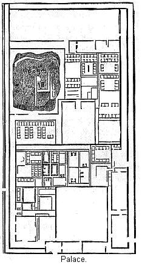Mr. Squier tells us that the ruins "consist of a wilderness of walls, forming great inclosures, each containing a labyrinth of ruined dwellings and other edifices." As our space is limited, we will describe but one of these inclosed spaces. This is a view of what is usually called a palace, but this certainly is an absurd name. The inclosure contains some thirty-two acres; the walls surrounding it are double, and sufficiently heavy to resist field artillery. At the base the walls, in some cases, are fifteen feet thick, gradually diminishing toward the top, where they are not more than three feet thick. They vary in height, the highest ranging from thirty to forty feet high. In order to give a clear idea of these walls, we introduce this cut, which gives us a section of the walls. The materials of which they are built is adobe.
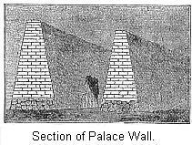Within this inclosure we notice three open places, or courts, a number of smaller cross-walls dividing the remaining space into a number of small courts. Around each of these courts, generally on three sides, are the ruins of houses. All in the interior of the large inclosures is so far gone in ruins that we can with difficulty make out the plan. Inclosures, such as we have described here, are the principal features of the Chimu ruins. Mr. Squier speaks of one three or four times the size of this one. With our present knowledge we are justified in concluding that Chimu was the head-quarters of a powerful tribe. We are surely justified in assuming further that each of these great inclosed squares, containing upwards of thirty, forty, and even fifty acres, was the home of a gens—their fortified place.
Of the houses, Mr. Squier says: "Around each court the dwellings of the ancient inhabitants are grouped with the utmost regularity. . . . Some are small, as if for watchmen or people on guard; others are relatively spacious, reaching the dimensions of twenty-five by fifteen feet inside the walls. These walls are usually about three feet thick, and about twelve feet high. The roofs were not flat, but, as shown by the gables of the various buildings, sharply pitched, so that, although rain may not have been frequent, it was, nevertheless, necessary to provide for its occurrence. Each apartment was completely separated from the next by partitions reaching to the very peak of the general roof. There are no traces of windows, and light and air were admitted into the apartment only by the door."
On one side, at least, the whole area of the city was protected by a heavy wall, several miles of which were still standing at the time of Mr. Squier's visit. At various places along this wall, cross-walls extended inward, thus inclosing great areas which have never been built over, and which show all evidence of ancient cultivation. We notice, near the upper end of this inclosure, a court, occupied by a mound. This is known as a huaca, which calls for some explanation. It seems that the general name among all the Peruvian people, for a sacred object, is huaca. Being a very superstitious people, this name is applied to a great variety of purposes, amongst others, to these great artificial mounds, the majority of which are probably burial mounds. The construction of many of these mounds is very singular. It seems as if they were a large collection of rooms, each one of which was filled with clay or adobe. In some of these chambers, probably, treasures are concealed. One very celebrated huaca, at Chimu, was found to contain an enormous amount of gold vessels.
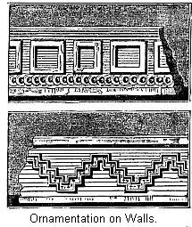We must not forget to notice the arts of the Chimu people. The walls of the inner edifices were often ornamented as is seen in the following cut, of which the upper one is stucco-work and the lower one is in relief. Adobe bricks are allowed to project out, forming the ornamental design. Other ornaments of stucco-work were observed. The second figure on this page gives us an idea of this style of ornaments. As an evidence of how the climate of Peru preserves ruins, we would mention that, though this last stucco-work has been exposed to the elements for probably several centuries, yet it is still apparently perfect.
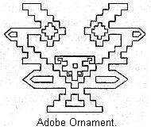The Chimu people were certainly very expert workmen in gold and silver. De Leon asserts that, when the Incas conquered them, they took to Cuzco many of the artisans of the country, "because they were very expert in the working of metals, and the fashioning of jewels and vases in gold and silver." In the cut following we have two vases—the smaller one of gold, the larger of silver. The material is very thin, and the ornaments are produced by hammering from the inside.
Besides such works as just described they had the art of casting representations of men, animals, and reptiles in silver—sometimes hollow, sometimes solid. They even cast more complex objects. Mr. Squier says he has one "representing three figures—one of a man, and two women, in a forest. It rises from a circular base about six inches in diameter, and weighs forty-eight and a half ounces. It is solid throughout—or, rather, is cast in a single piece, and rings, when struck, like a bell." The trees, he says, are well represented, their branches spreading in every direction. The human figures are also well proportioned, and full of action. They also knew how to manufacture bronze. Many agricultural implements are found, not only at Chimu, but all along the coast. In the preceding cut we have bronze knives and tweezers—also, a war-club of the same material.
All the coast tribes of Peru excelled in the manufacture of pottery. Mr. Squier tells us that, in this sort of work we find "almost every combination of regular or geometrical figures"—men, birds, animals, fishes, etc., are reproduced in earthenware. In this cut we have one of the many forms. Notice the serpent emblem.
The people of Chimu, whose ruins we have been describing, belong to the coast division—differing in many respects from the Peruvian tribes in the interior. Our information in regard to the coast people is very limited. We have to judge them almost entirely from the ruins of their towns, and the remains of their handiwork. There is no reason to suppose they were the inferiors of the Peruvians in culture. It is quite the custom to speak of them as if they were low savages before the Incas conquered the country; and that they owe to the latter all their advance in culture. On the contrary, we may well doubt whether their condition was at all improved by the Inca conquest. The coast people are supposed to have been conquered about one hundred years before the Spanish conquest. It was only after a most stubborn resistance that the principal valleys were subdued.
It is not necessary, neither have we space, to give a review of all the ruins along the coast. They are very plentiful. There is not an inhabitable valley but that they abound there. The soil where not irrigated is very dry, and tends to preserve any thing buried therein. All the coast people buried their dead; hence it is that we find, in nearly all the coast valleys, such extensive cemeteries. At Ancon, for instance, twenty miles north of Lima it is simply wonderful how extensive the cemeteries are. Mr. Hutchinson says they extend for miles. Very extensive explorations have been made here for scientific purposes. We have given, earlier, some water-jars excavated at Ancon, in last illustration we have some specimens of cloth found in graves farther north; and in the same locality was found a very wonderful piece of feather-work. The small feathers were so fastened to a ground of cotton cloth that they could not be pulled off.
Another noted place, about the same distance south of Lima, is Pachacamac. Mr. Squier concludes, from the cemeteries at this place, that it was a holy place, to which pilgrims resorted from all parts of the empire so as to be laid to rest in holy ground. When we learn of so many other similar localities, we see that this conclusion does not follow. The most we can say is, that these valleys have surely been settled for a long while.
The city of Lima is situated on the south bank of the Rimac River, about six miles from the coast. Its port is the town of Callao. The valley is called the Huatica Valley. Very extensive and wonderful rains occur in this valley, between Lima and the sea. We are told these ruins are thick and close over a space of a few square miles, and are inclosed within a triple wall. The last cut is given as a representation of a portion of this wall, though only a small portion here and there is still discernible. Amongst these ruins are a large number of immense mounds.
Some are huacas, or burial mounds; and some are in the nature of fortresses. It is best to explain a little more particularly about the burial mounds of the coast region of Peru. This cut gives us an idea of their appearance. As to their construction Mr. Squier says: "Many if not most of the pyramids, or huacas, were originally solid—built up of successive vertical layers of bricks, or compacted clay, around a central mass or core."
But this is not always the case; since in many huacas we find walls, in some rooms, and, finally, as before remarked, some apparently consist of a large, many-storied building, the rooms of which are all filled with clay. In the mound just mentioned, Mr. Hutchinson found a number of inclosures—though the work was done in a rough, shapeless manner. Mr. Squier gives us a description of a many-roomed huaca as follows: "Thanks to the energy of treasure-hunters who have penetrated its sides, we find that it had numerous large painted chambers, was built in successive diminishing stages, ascended by zigzag stair-ways, and was stuccoed over and painted in bright colors. The conquerors filled up these chambers, and recast the edifice with a thick layer of adobe."37
This is surely a singular piece of work. The building just described by Mr. Squier must have been much like a pueblo. We wish we had fuller descriptions of it. Mr. Squier is eminent authority, and scholars delight to honor him for his researches. We take the liberty, however, to question some of his conclusions. How does he know that this structure was ever used for any other purpose than as a mound? It is indeed a singular way to construct a mound, but when we learn of the existence of mounds showing the different methods of work—some solid, some with walls, others with rude rooms, still others with rooms towards the top—why not say that this many-storied building was simply one style of mound-building? He claims that the Incas filled up these rooms, and transformed the house into a mound. Mr. Hutchinson claims there is no proof that the Incas did this sort of work.
As an example of fortress-mounds, also prevalent in the valley of the Huatica, we present the next cut. Mr. Hutchinson describes this mound as being eighty feet high, and about four hundred and fifty feet square. "Some of the adobe walls, a yard and a half in thickness, are still quite perfect. That this was not likely to have been a burial-mound may be presumed from its formation. Great large square rooms show their outlines on the top, but all filled up with earth. Who brought this earth here, and, with what object was the filling up accomplished? for the work of obliterating all space in these rooms with loose earth must have been almost as great as the construction of the building in itself."38 So it seems that in the fortress-mounds also we meet with this same mysterious feature—rooms filled with earth.
The Huatica Valley was also the location of a famous temple—at least such are the traditions—and ruins are pointed out as being those of the temple in question. It is simply an immense, large inclosed square, of some forty-nine acres. On each side of this square there is a huge mass of ruins, and another in the center. In our next illustration we have a portion of the wall surrounding the ruins on the south side of the supposed temple. This is the largest of the group of ruins. The walls are seventy feet high; the area at the top is over five acres. Here, again, we notice the same mysterious feature already referred to, for "on the top of this were also discernible the outlines of large square rooms, filled up, as all the others, even to the topmost height of seventy feet, with earth or clay."
This cut is given as a fort, meaning thereby a fortress-mound, such as we have already described. It is said to be situated to one side of the temple. From this we understand that the wall seen in the cut is that already mentioned as inclosing the temple. Another ruined fortress found in this valley is given earlier.
Twenty miles south of Lima, in the valley of the river Lurin, is an important field of ruins, known as Pachacamac, which is still the name of a small village in the neighborhood. We give a general view of the ruins. The principal point of interest, about it is the ruins of an old temple. Traditionally, this, is one of the most interesting points in Peru. All the coast tribes were very superstitious. We have already referred to the celebrated temple near Lima. The temple at Pachacamac was of still greater renown. Arriaga, a famous ecclesiastic, took an active part in extirpating their idolatrous belief. From his accounts, it seems they were much addicted to fortune-telling. Their gods were made to give out oracles and their temples became renowned just in proportion as their priests were shrewd in this matter.
Those at Pachacamac were especially skillful, and it is said, pilgrims resorted to it from all parts of the coast. As a consequence, it became very rich. The god that was worshiped here was a fish-god. The name of this god, and the name of this old town are alike lost to us. When the Incas conquered the coast people, they imposed the name of one of their own divinities on this temple, and by that name the place is now known to us.39
The ruins of the supposed temple are seen on the hill in the background of the picture. A number of writers speak of this hill in such terms as to imply that it was altogether artificial, like the famous pyramid at Cholula.
Mr. Squier says that it is largely artificial, but that the central core is a natural hill. He speaks of rocks cropping out on the highest part, which seem to be conclusive of the matter. They built up great terraces around this central core. These terrace walls are now in such a ruined condition that they can with difficulty be made out. We introduce this cut as a nearer view of the ruins of the temple.
Some writers assert that the Incas erected on the summit of this hill a temple of the sun. There are, however, no good proofs of this assertion. According to Mr. Squier the only ruin of the Inca type of architecture is a mile and a half distant. Mr. Hutchinson noticed, on the very top of the hill, evidence of the same mysterious proceedings to which we have already referred—that is, great rooms all filled up with clay. He propounds this query: "Whose hands carried up the enormous quantities of earth that fill every space and allow no definition of rooms, halls, or, indeed, of any thing but the clay itself, and the walls cropping up from amongst them?" We are afraid this query can never be answered. Mr. Hutchinson found graves to be very plentiful all over the field of ruins. Quite a number of curiosities have been found in these graves. We present in this cut some of the same. We call especial attention to the duck-headed bowl. Compare, this with the cut given in Chapter X, and we will be struck with the similarity. Another view of the ruins at Pachacamac is given earlier in this chapter. As in the case of the ruins of Grand Chimu, the whole field of ruins was encompassed by a wall, portions of which Mr. Hutchinson observed on the north, stretching away from the sea inland. Explorers have found here true arches. They are said to exist in Northern Peru. We are at a loss to account for their appearance, for certainly the people generally were ignorant of their use.
The valley of the Canete, the next one we meet going south, is a very large and very fertile valley. It is also full of ruins, but not differing enough from the others to justify a separate description. About one hundred miles below Lima we notice three small islands. These are the Chincha Islands, noticeable on account of the immense quantities of guano they contain. It seems that at various depths in this guano deposits are found relics of man. In our next cut we present some of these objects. The two small vessels which were probably water jars, were found buried in the guano at a depth of sixty-two feet. The other figure, a wooden idol, was found at the depth of thirty-five feet.
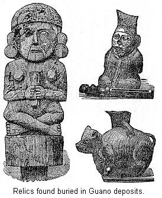We have no very good data on which to rely when we attempt to estimate the number of years required to bury the water jars to the depth where found. Thousands of years must have passed.40 The water jars are not rude forms. No little skill is indicated by their formation. The wooden idol is not necessarily near as old as the jars, but no one can doubt but that it dates from long before the Inca conquest of the valley. Another collection of small idols, and supposed royal emblems, also found in guano deposits, but at an unknown depth, is shown earlier in this chapter.
We have thus far been describing the ruins that occur in the territory occupied by the coast tribes, a people in many ways different from the great body of Peruvian people in the interior. According to traditions, the conquest of the coast tribes took place about one hundred and fifty years before the Spanish conquest. The details of this conquest are given with great precision. We doubt whether any great reliance can be placed upon them. We might remark that while Garcillasso traces the progress of the conquest from the south north, Salcamayhua reverses this order, and makes the victorious Incas march from the north to the south. One or the other made a mistake in traditions.
The Inca conquest of the coast tribes was a very thorough one. The names and traditions of the tribes were blotted out. The word Yunca, by which they are known, is from the Inca language. The same is true of the names of the coast valleys, and yet, from what we have already learned of them, we feel sure that they were very far from the degraded savages Garcillasso would have us believe they were. The inhabitants of each valley formed a distinct community under its own chief. De Leon says: "The chief of each valley had a great house, with adobe pillars and door-ways, hung with matting, built on extensive terraces." This might have been the official house of the tribe.
They were an industrious people, and the evidence is abundant that they had made considerable advance in cultivation of the ground. They "set apart every square foot of ground that could be reached by water for cultivation, and built their dwellings on the hillsides overlooking their fields and gardens. Their system of irrigation was as perfect as any that modern science has since adopted.41 It is an altogether mistaken idea to suppose the Incas were the authors.
We are not without evidence that they were possessed of considerable artistic skill. This preceding collection of pottery ware is not the work of savages. Mr. Markham further tells us that they made "silver and gold ornaments, mantles, embroidered with gold and silver bezants, robes of feathers, cotton cloth of fine texture, etc." We have already referred to the tasteful decorations of the walls of Grand Chimu. "Figures of colored birds and animals are said to have been painted on the walls of temples and palaces." At Pachacamac the remains of this color are still seen on a portion of the walls. This cut represents the head of a silver cylinder found in one of the coast valleys. The ornamentation is produced by hammering up from below.
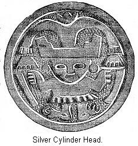We must now leave the coast regions and investigate some ruins in the interior. We have already spoken of the Lake Titicaca region. Not far from the southern border of that lake we notice a place marked Tiahuanuco. Here occur a very interesting group of ruins. They consist of "rows of erect stones, some of them rough, or but rudely shaped by art, others accurately cut and fitted in walls of admirable workmanship; long sections of foundations, with piers and portions of stairways; blocks of stone, with mouldings, cornices, and niches cut with geometrical precision, vast masses of sandstone, trachyte, and basalt, but partially hewn, and great monolithic doorways, bearing symbolical ornaments in relief, besides innumerable smaller rectangular and symmetrically shaped stones rise on every hand, or lie scattered in confusion over the plain."42 In fact, all explorers are loud in their praise of the beautifully cut stones found in the ruins.
We have seen in our review how general has been the desire to raise foundations, sometimes of great extent, on which to place buildings. This is true of the ruins under consideration. Here the pyramid or foundation was faced with stone work. In this illustration we have a view of such a wall yet remaining in place. The labor expended on such a wall was very great. We notice in the cut three large standing stones. These are ranged along at regular intervals between. No mortar was used in the construction of the wall. If we examine the large standing stone carefully we will notice on the side a sort of projecting shoulder. The stones of the wall that come in contact with this standing stone are cut to fit this shoulder.
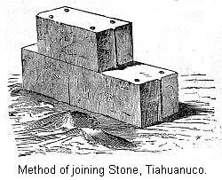The remaining stones in the wall were held in place by a peculiar arrangement, illustrated in this cut. Round holes were drilled in the bottom and top of each stone. There is reason to suppose that bronze pins fitted into these holes. Furthermore, each stone was cut with alternate grooves and projections, so as to fit immovably into each other.
One case was observed where either the will has entirely disappeared, or else it was left unfinished, and so we have a row of these standing stones, as seen in this illustration. This has been called the American Stonehenge name is inappropriate, because we have no reason to suppose the plans of the builders of the two structures were at all similar.
The most celebrated feature of these ruins is the presence of huge gateways, each one cut out of a solid mass of stone. We give a view of the most noteworthy of these gateways. It is now broken, tradition says, by a stroke of lightning.43 The upper portion is covered with carvings.
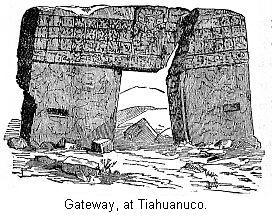North of Tiahuanuco is Lake Titicaca. This was the sacred lake of the Incas. We have already referred to the probable origin of this feeling. Near the southern end of this lake, on the western side, is the peninsula of Copacabana. Separated by a narrow strait from the northern extremity of this peninsula is the sacred island, Titicaca. According to traditions, the Incas sought, in all ways, to beautify this island. They built temples, and laid out gardens. The hills were leveled as much as possible, terraced, and then covered with earth brought from afar. According to the statements of early writers, pilgrims were not permitted to land on its sacred soil until they had undergone certain preliminary fasts and purifications on the main-land. Landing on the island, they traversed a terrace, and by a narrow passage way they were conducted between two large buildings, where other ceremonies were performed.
The most sacred spot in all the island was a rock in the northern part. Only priests of especial sanctity were allowed near it. The rock to-day presents but the appearance of a weather-worn mass of red sandstone. It is traditionally represented as having been plated all over with gold and silver, and covered, except on solemn occasions with a mantle of rich color and material. Here the sun was believed to have first risen to dispel the primal darkness. To this day the Indians regard it with superstitious veneration. The traveler's guide, when he comes in sight of it, removes his hat, and reverently bows to it, and mutters to himself a few words of mystic import.44
The whole appearance of the island shows how highly it was regarded. In one place the remains of a drinking fountain were noticed. Streams from some unknown source were still bringing to it their limpid burden. Perhaps as noticeable a ruin as any is represented in this cut. It is called the Palace. It is in a sheltered nook. The lake washes the very foot of the foundation on which it stands. It is two-storied. In the lower story were twelve rooms, so connected with each other that but four of them communicated by doors with the outside. The others were certainly dark and illy ventilated. The second story was entered by means of the terrace in the rear. The same statement may be made in regard to its rooms; they did not, however, at all correspond in arrangement with the rooms below. The Island of Coati, but a short distance to the south-east, was sacred to the moon. It has also a number of ruins. The approach to this was guarded by a number of terraces.
We will describe one more class of ruins found abundantly in the Collao region. These are burial towers, or chulpas. A view of one is here presented. The chulpas are common in the Titicaca basin, and usually occur in groups, and almost always in positions from which a large extent of country can be viewed. The great mass of a chulpa is solid, but within is a dome-shaped chamber, into which the opening seen in the cut leads. Sometimes the chulpas are round, and in some the masonry is of that variety we have already mentioned, called the Cyclopean. Another view of burial towers is given earlier in this chapter.
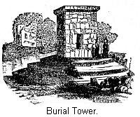As a mere description of ruins becomes tiresome, we will now pass to Cuzco, and see of what we can learn of the architecture of the Incas. The Incas were, of course, a very rich and a very powerful tribe. All the tribes of ancient Peru had to pay them tribute. We way therefore suppose that the pueblo of Cuzco was well built, the houses large, and imposing, and that the official buildings for worship and tribal business would be commensurate with their importance as a tribe. Yet we have but very few accounts of these buildings. Immediately after the conquest, many of the Spanish leaders settled in Cuzco. They made many changes in the various edifices, and introduced into them many improvements. At present in the modern city we still find portions of ancient walls, and can trace the foundation of various buildings.
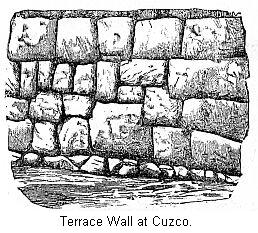The site of the city of Cuzco is very uneven. It stands on the slopes of three hills, where as many rivulets come together. The ancient builders had to resort to extensive terracing in order to secure level surfaces on which to build. These terraces, built in a substantial manner, and faced with stone, are still standing in many places. In this illustration we have a view of such a wall. Observe that the stones are not laid in regular courses, nor is there any regularity as to their size. This is a good example of a Cyclopean wall. Some of the stones must weigh several tons, and they are fitted together with marvelous precision, one stone having as many as twelve angles.
All accounts agree that the temple of the sun was the grandest structure in Cuzco. We present an illustration of one end of it. This end is slightly curving. It is necessary to remark that this end now forms part of the Church of Santo Domingo. The fine-looking window and balcony are modern additions to this ancient building. According to Mr. Squier, the temple was an oblong building, nearly three hundred feet long, by about fifty in width. It formed one side of a spacious court. It did not extend east and west, but rather north-east and south-west. Early chroniclers affirm that the inner walls of this temple were covered with gold. Portions of very thin plates of gold exist in private museums in Cuzco, said to have formed part of this covering. The end of the temple shown in our illustration was covered with a great plate of gold intended to represent the sun. This plate was all in one piece, and spread from wall to wall.
Only fragments of the ancient buildings of Cuzco now exist. But enough are at hand to enable us to describe their general characteristics. As a rule, they were built around a court, the outer surface presenting the appearance of an unbroken wall. These walls are excellent specimens of Inca masonry. All travelers speak in their praise. Mr. Squier says: "The world has nothing to show in the way of stone-cutting and fitting to surpass the skill and accuracy displayed in the Inca structures at Cuzco." There was but one gateway to the court. This entrance was broad and lofty. On the lintels, over the doorway, was frequently carved the figure of a serpent. The apartments were constructed so as to face the court, and nearly all opened upon the same. In some cases rooms wore observed, to which access could be obtained only after passing through several outer rooms. Some of the walls yet remaining at Cuzco are from thirty-five to forty feet high. This would indicate houses of two or three stories.
It is here necessary to state that the structures we have been describing are considered by most writers as palaces of the Inca chiefs. Names hive been bestowed upon them—such as the palace of Huayna Capac. It is asserted that each Inca chief built a separate palace. The credulous traveler is even pointed to a pile of ruins said to have been the palace of that mythical personage, Manco Capac. There is some conflict of authority as to the names of these palaces. Modern tradition names one of the most imposing piles as the palace of Inca Rocca, and as such it is described by Mr. Squier and others. Garcillasso De La Vega says this chief's palace was in an altogether different part of the city.45 Those who call these buildings palaces, think the houses of the ordinary people have all disappeared. It is evident, however, that if our views of the state of society among the Incas be right, that it is a misnomer to call these structures palaces. Some of them may have been public buildings, devoted to tribal purposes. But we need not doubt but that this was the type of communal buildings erected by the natives of Cuzco.
We must describe one more piece of aboriginal work. This is the celebrated Fortress of Cuzco. As we have stated, the ancient pueblo, or city@, was built on the slopes of three hills. One of these, easily defended, was strongly fortified, and thus converted into a citadel. Though called a hill, it is in reality a projecting headland. Back of it rise still higher hills. The portion overhanging the city is very precipitous, in fact, almost incapable of ascent. There is, however, a pathway up this front, ascending in places by stone steps. On this front it did not need very strong fortifications, yet sections of stone wall, serving for this purpose, are to be seen. They have been mostly thrown down, and the stones rolled or tumbled down the hill to be utilized in building. The main defensive works are where the headland commences, from which point the city is not visible.
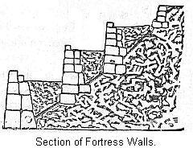In this illustration we have a view of the three massive walls which defended the citadel. They are really wonderful works. In order to understand the construction, we will present an imaginary section of the walls. The walls support terraces, but they rose above the terraces so as to form a parapet. To prevent the accumulation of water behind the parapet, channels were cut through the walls at regular intervals to drain them. The height of the outer wall is at present twenty-seven feet; the width of the terrace thirty-five feet. The second wall is eighteen feet high; the width of its terrace is also eighteen feet. The height of the third wall is fourteen feet.
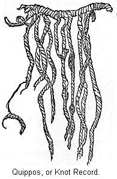The Incas divided the year into twelve months, but we do not learn how they kept track of the years. In this respect they were behind the Mexicans. Neither do we know of any hieroglyphics for days, or months, or years. In the matter of keeping records, they must have been far below the Mexicans. Our next illustration is that of one of their knot records, or quippos. It is a very rude attempt to assist the memory. To the base cord are attached other threads of various colors, and tied in various ways. We, of course, know but very little about them. It is claimed, however, that a red thread signified a soldier, or war; a yellow one signified gold; a white one silver, or peace; a green one wheat, or maize. A single knot is said to have stood for ten; two knots, twenty; a knot doubly intertwined, one hundred, etc. Also the position of the knots on the threads was to be considered, their distance apart, the way the threads were twisted, and many other details.46 It is manifest, however, that this system of records is of very little value, and is way below the picture-writing of the Mexicans.
Take it all in all, the Incas are indeed an interesting people. We believe, however, their culture has been greatly overrated. Our object in this chapter has been to give an outline of the Incas and the tribes subject to them. It is impossible in these few pages to give more than an outline. Should the reader, by the perusal of these pages, acquire an interest in the culture of the Andean people just before the Spanish invasion, and be thereby induced to continue his investigations, the writer will consider such a result reward enough, even though the conclusions reached should be totally opposed to those set forth in this chapter on Ancient Peru.
Chapter XV: The Culture of the Civilized Tribes.
{kind=link}
{kind=link}
{kind=link}
{kind=link}